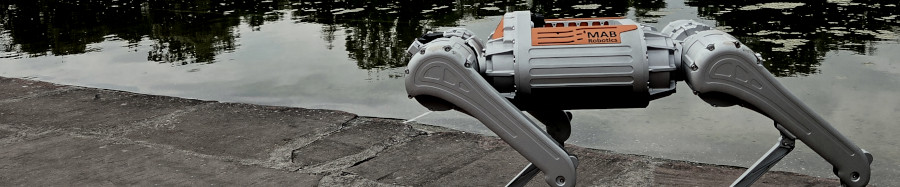
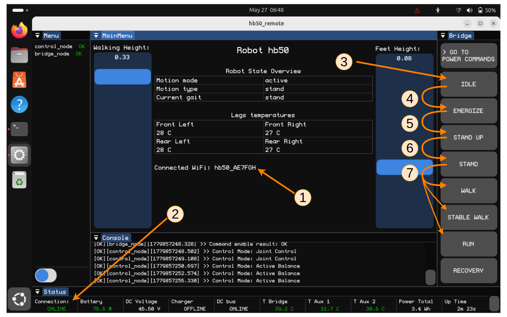
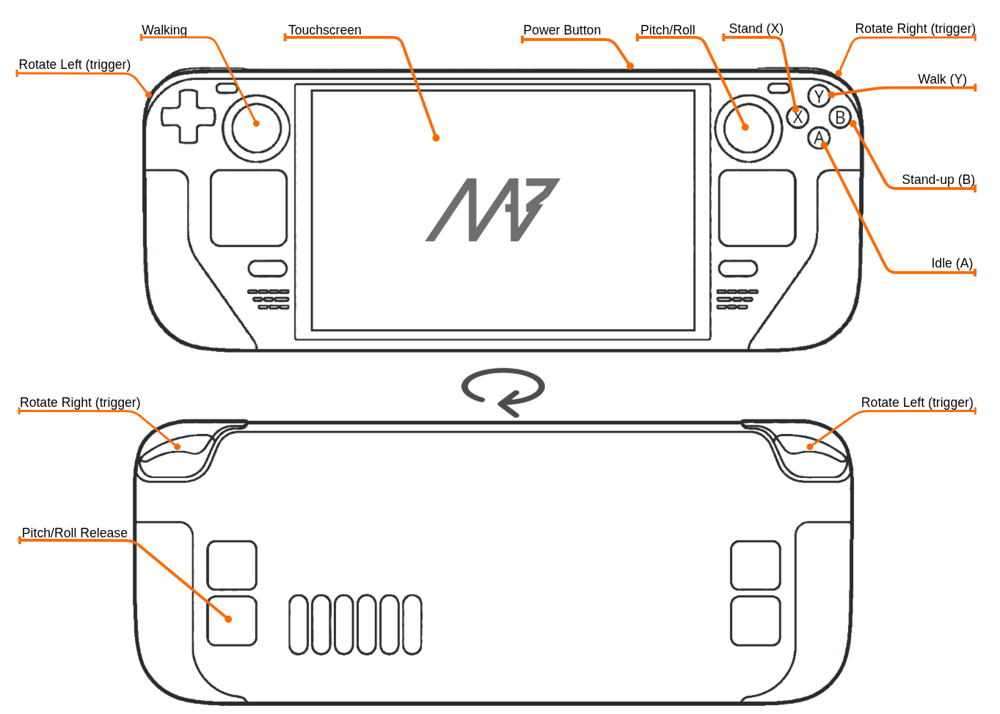

Setup and Startup#

What’s in the box?#
The standard robot package may include the following items:
Item |
Description |
Standard |
Pro |
|---|---|---|---|
Quadruped robot |
Main robotic platform |
||
Battery pack |
Power source for the robot |
||
Battery charger |
Charger compatible with the supplied battery |
||
Operator controller |
Dedicated remote controller |
||
Documentation |
Operating manual, safety instructions, and configuration notes |
||
Ethernet cable |
Used for direct network connection |
||
Transport case |
Protective case for storage and transport |
The exact contents may depend on the purchased configuration. Check the packing list supplied with the robot.
[TODO: INSERT THE SMALL PICTURES OF THE INCLUDED ITEMS WITH DESCRIPTIONS]
Safe startup and shutdown#
Before startup:
place the robot on stable, flat ground. Slope should not exceed 5%.
ensure that the legs have enough free space to move,
check that the emergency stop is released,
ensure that no one is touching the robot,
verify that the operating area is clear.
Note
Startup procedure takes around 90 seconds to complete.
Before shutdown:
stop robot motion,
switch the robot to idle or safe state,
wait until the robot is stable,
stop the robot software,
turn off power according to the shutdown procedure.
Note
Shutdown using button or via hb_remote, takes around 10 seconds to complete, up to 15 seconds, while the charger is connected.
Connection#
By default, the robot is configured with independent WiFi access point. SSID follows a pattern:
hb50_XXXX - for 2.4Ghz network,
hb50_XXXX_5G - for 5Ghz network.
Where XXXX is robot serial code shortened to 4 hex symbols - e.g. “hb50_AFAB” or “hb50_D71C_5G”.
If SteamDeck controller has been ordered alongside the robot, it will automatically connect to the network. If connections has to be established from other device the default WiFi password for all robots is:
milkaorzechowa
Operating the Robot with the Control Console#
The control console is used to monitor robot status, change robot modes, and command basic movement. The robot is controlled using a Steam Deck console with the robot control GUI application installed.
Warning
The robot can move suddenly after being enabled. Keep a safe distance from the robot and make sure the emergency stop is accessible.
Before operation#
Before controlling the robot:
Place the robot on stable, flat ground.
Make sure the operating area is clear.
Make sure no one is touching the robot.
Check that the emergency stop is accessible and released.
Check that the battery level is sufficient.
Make sure the control console is connected to the robot.
Powering on#
Press and hold the robot power button for 2 seconds.
Wait for the power-on sequence to complete (~90 seconds).
Open the control console.
Wait until the console shows that the robot is connected.
Check the robot status and battery level.
Standing up#
Note
Make sure the robot is on stable, flat ground, all legs have enough free space to move.
Validate robot network connection,
Make sure ROS2 connection is ready,
Validate robot is IDLE mode,
Warning
Next step is going to energize (enable) robots actuators, step away from the robot and make sure it is safe to proceed, according to Safety section of this manual.
Energize the actuators,
Start “Stand Up” procedure,
When robot reaches stable standing position, enter active-balance “Stand”,
Now you can select one of the available gaits.

Basic movement#
After the gait is selected, use the control console to command movement.

Command |
Robot behavior |
|---|---|
Forward |
Walks forward |
Backward |
Walks backward |
Left / Right |
Moves or turns left/right, depending on control mode |
Rotate Left / Right |
Rotates in place |
Stop |
Stops commanded motion |
During operation:
keep the robot under supervision,
keep a safe distance,
avoid obstacles, stairs, ledges, wet surfaces, and people,
monitor the battery level and warning messages,
stop the robot if unexpected behavior occurs.
Stopping and powering off#
To stop and power off the robot:
Stop all movement commands.
Select idle mode in the control console.
Wait until the robot is stable.
Press and hold the power button for 2 seconds.
Wait until the shutdown sequence is complete.
Emergency stop (E-stop)#
Use the emergency stop immediately if the robot moves unexpectedly, becomes unstable or creates any unsafe condition.
After activating the emergency stop:
Wait until all motion stops.
Check the robot and surroundings.
Remove the cause of the emergency.
Reset the emergency stop only when it is safe to continue.
Warning
E-stop is an emergency measure - it should only be used in emergency, when disabling the robot through software is impossible or the robot is unresponsive to remote controls. Using an E-stop can lead to generating large voltage spikes, which may lead to irreversible damage to the hardware of the robot and connected payload.
Charging the Robot#
Use only the charger supplied with the Honey Badger 5.0 robot or another charger approved by the manufacturer.
Warning
Do not charge the robot unattended. Do not charge the robot if the battery, charger, cable, or connector is damaged.
Note
The robot is capable of operating while charging - however the charging cable can be easily damaged by robots actuators in pinch points. If the user decides to proceed with simultaneous charging and operating, special care must be taken to protect the cable from damage. We advise to avoid charging and operating at the same time.
[TODO: INSERT THE PICTURE/PICTURES OF THE ROBOT CHARGER AND CHARGER CABLES]
Before charging#
Before connecting the charger:
Place the robot on a stable, flat surface.
Make sure the robot is stopped and in a safe state.
Check that the charger, cable, and connector are clean, dry, and undamaged.
Make sure the charging area is dry, ventilated, and away from flammable materials.
Charging procedure#
Connect the charger to the robot.
Connect the charger to the mains power outlet.
Check the LED indication around the power button.
Wait until the battery is charged.
Disconnect the charger from the mains power outlet.
Disconnect the charger from the robot.
Warning
Stop charging immediately if abnormal heat, smell, smoke, or noise is detected!
Note
Disconnect the charger by holding the connector body. Do not pull on the cable!